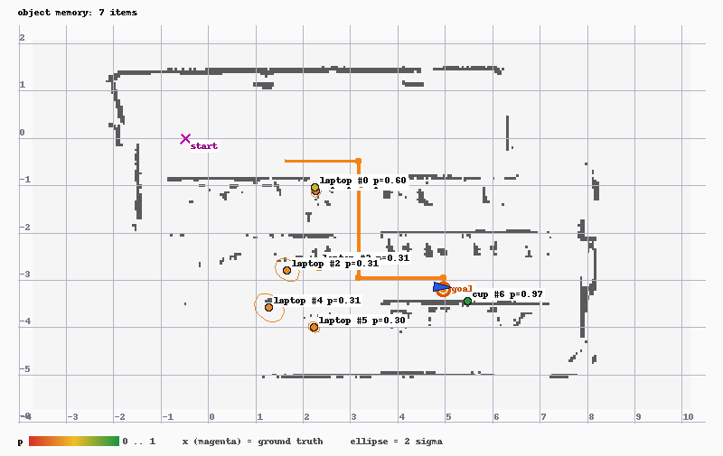
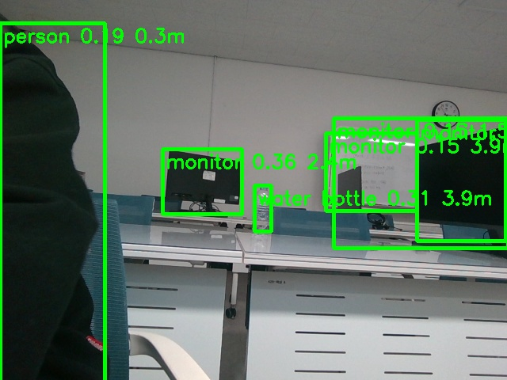
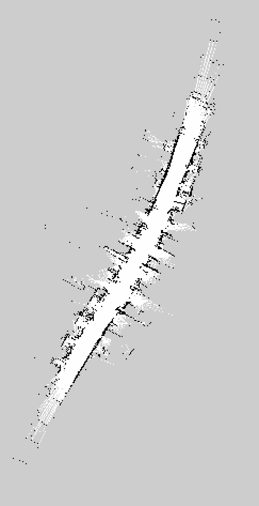
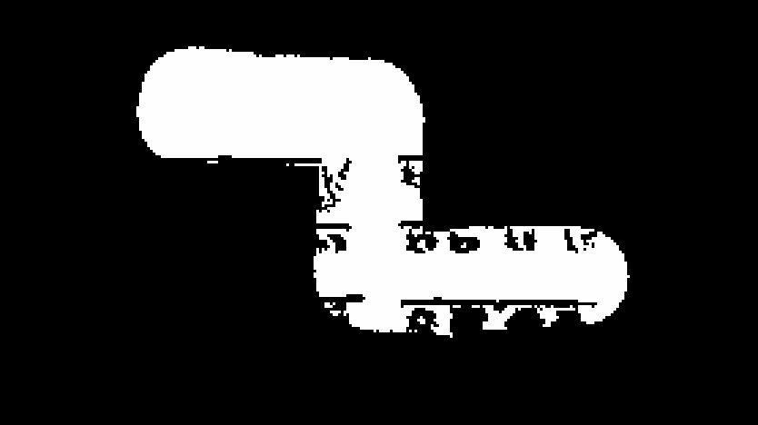

2026 Fall · Intelligent Robotics
Where Is My Cup?
Probabilistic Object Memory on a Real Robot
Speaker : S.Lee
December 10, 2026 · Team 6, University of Seoul

The robot's memory and path after asking “Where is the cup?” (real robot, 11/28)
Overview
Where Is the Cup?
One question → drive → re-check → found (real robot, 11/28)
(a) Run
[ Video 3 ]
Real robot, 11/28 01:35 : “Where is the cup?” → drive → look around → found
(b) Map view after the run
Fig. 1. (a) The robot answers a spoken query. (b) Memories (dots, color = belief), planned path (orange) and goal.
How did it know where the cup was?
§1 Introduction
Problem and Contributions
Find a remembered object from one spoken query
Input
Spoken query q, map m,
memory M built while driving
memory M built while driving
→
Output
Drive to the object,
report found / not found
report found / not found
Constraints
Narrow aisles · 2D LiDAR
Jetson 8 GB
Jetson 8 GB
Contributions
1.Probabilistic object memory : Bayes + Kalman [1]
2.4-command navigation for narrow aisles
3.Failure analysis of 40 real-robot problems
[ Photo 1 ]
Lab scene : robot in the aisle,
cup on a desk
cup on a desk
Remember with probability, not certainty
§2 Formulation
Each Memory : What, Where, How Sure
A query is ranked by meaning × belief
ei CLIP image embedding — what
μi, Σi position, Kalman — where
li log-odds belief — how sure
dot color = pi (dark = sure) · #n = visit order
Fig. 2. A memory item. A query is ranked by text-image similarity [2] times belief; the top 3 are visited in order.
Rank by meaning × belief
§3 Method
System Overview
From one question to one cup
▶
Software
NanoOWL · CLIP
objmem
while driving
objmem
while driving
faster-whisper
CLIP text
× belief
× belief
gridnav · 4 cmds
AMCL on
Cartographer
AMCL on
Cartographer
look ±15° × 3
NanoOWL
+ CLIP ≥ 0.5
NanoOWL
+ CLIP ≥ 0.5
map view
(orange path)
live video
(orange path)
live video
Steps
0. Remember
drive, beforehand
1. Ask
voice → text
2. Rank
which one?
3. Drive
go there
4. Re-check
is it really?
5. Report
found / not
Middleware
ROS 2 · TF2
SSH → /query
HTTP :8600
ROS 2 action
Fast DDS
Fast DDS
HTTP :8600
/objmem/status
Hardware
D455f depth
Jetson GPU
Jetson GPU
Laptop mic
Jetson Xavier NX
LDS-02 · OpenCR
D455f
Laptop
Ubuntu 20.04 · JetPack 5.1.5 · ROS 2 Foxy · Jetson on a power bank
Fig. 3. Pipeline. Maroon (the only accent color) = what we built; the rest is off-the-shelf [3], [4], [6].
Off-the-shelf perception, our own memory and motion
§3.1 Method
From Camera to Map
Pixel + depth → one point on the map
(a) Detection + depth

(b) One matrix per hop
Pixel
u, v, Z
K−1→
Camera
D455f
B→
Robot
mount
A→
Map
AMCL pose
Fig. 4. (a) NanoOWL [3] box with D455f depth (11/24). (b) Back-projection, then homogeneous transforms [7].
Homogeneous coordinates: one matrix per hop
§3.2 Method
Is the Cup Still There?
Static state binary Bayes filter, in log odds [1]
•Seen : +2.08
•In view, not seen : −1.50
•Objects move → prediction step (decay)
Fig. 5. Example sequence from Eq. (4): two looks, then the cup is moved — three misses bring p below 0.5.
Seen raises the belief, missing lowers it
§3.3 Method
Where Exactly Is It?
Kalman filter correction — the cup does not move [1]
Fig. 6. 1D example from the lecture [7]: memory N(8, 4) and a new look N(6, 1) fuse to N(6.4, 0.8) — a weighted mean.
Every look shrinks Σ
§3.4 Method
Localization and Navigation
Two maps, two jobs : full map → AMCL, aisle map → planning
Fig. 7. Localization uses the full map; planning uses only the aisles. Eq. (8), the odometry motion model [1]: every turn adds error, so every turn is exactly 90°.
Known map → errors stop piling up
§4 Experiments
Real-Robot Run (11/28)
First full run : see → remember → ask → drive → re-check
[ Photo 3 ]
The robot used : TurtleBot3 + 0.815 m mast
+ D455f + LDS-02
+ D455f + LDS-02
Table 1. Setup.
| Item | Value |
|---|---|
| Robot | TurtleBot3 Waffle Pi |
| Compute | Jetson Xavier NX · ROS 2 Foxy |
| Camera | RealSense D455f, 640×480, 0.815 m |
| LiDAR / map | LDS-02 · room_l4, 13.9 × 7.8 m |
| Objects | cup, laptop |
Table 2. Queries : planned turns, drive time, belief p at the found object.
| Query | Turns | Time | p | Result |
|---|---|---|---|---|
| “Where is the cup?” | 2 | 93 s | 0.84 | found |
| “Where is my laptop?” | 3 | 112 s (+42 s) | 0.67 | found |
| “Where is the cup?” | 3 | 100 s | 0.87 | found |
| Demo Day (12/03) | [ ___ / ___ ] |
3 / 3 found on the first full run
§4 Experiments
Ablation in Simulation
Toy world, 5 seeds × 20 queries — compare, do not read absolute values
(a) Search : which memory? (top-1)
CLIP
95.0%
Label match
43.0%
(b) After moving 4 objects
Probabilistic
100%
Similarity only
50%
moved object top-1 · visits per query 1.00 vs 1.80
(c) On the robot
[ Video 2 ]
Move the cup, ask again
old place → new place
(Demo Day)
old place → new place
(Demo Day)
Fig. 8. (a) Text-image similarity [2] beats label matching. (b) Lowering the old belief finds the moved object on the first visit. (c) The same test on the robot.
Lowering the old belief finds the new place
§5 Failure Analysis
40 Problems, 4 Broken Assumptions
Most real-robot bugs broke an assumption of the theory
Software 21
Hardware 7
Network 7
Mid. 5
Troubleshooting log 11/20 – 11/28, by layer (Network = network & tools, Mid. = middleware)
Table 3. Four cases and the assumption each one broke.
| Case | Symptom | Broken assumption | Theory |
|---|---|---|---|
| 1 Sensing | camera can't see desk tops | B, K are known | camera model, Eq. (2)–(3) |
| 2 Odometry | L-shaped drive → straight map | odom follows the wheels | motion model, Eq. (8) |
| 3 Localization | pose 1.8 m off | the map is informative | MCL weights, Eq. (9) |
| 4 Association | one cup → 3 memories | Qt matches real noise | Kalman, Eq. (10) |
Find the layer first, then the bug
§5 Failure Analysis
Case 1 : Sensing — B and K
Stock camera too low, bearing-only camera, placeholder intrinsics
(a) Camera too low → mast
[ Photo 4 ]
Robot side view : the mast
→
(b) Bearing-only → range-bearing
→
(c) Placeholder K
Fig. 9. (a) A 0.815 m mast enters B. (b) Two near-parallel sight lines leave ≈ 0.5 m error along the line. (c) A placeholder fx skews every bearing [7].
Measure B and K — never assume them
§5 Failure Analysis
Case 2 : Odometry — The Map That Wouldn't Turn
The wheels turned, odometry did not
(a) Symptom

→
(b) Diagnosis
| Turn in place | heading |
|---|---|
| Wheels | +29° |
| odom (driver) | +0.0° |
→
(c) Fix

•heading from wheels : +28.4°
•rotate the scan 180°
Fig. 10. (a) L-shaped drive, straight map (11/25). (b) Odometry froze; the LiDAR was mounted backwards. (c) After both fixes: straight walls, 0.14 m loop error.
Check odometry before blaming SLAM
§5 Failure Analysis
Case 3 : Localization — Right Map, Wrong Place
AMCL on the aisle-only map → 1.8 m off
(a) Symptom

aisle map → AMCL : pose 1.8 m off
→
(b) Diagnosis
AMCL pose
38%
re-localized
86%
scan beams on walls of the full map
→
(c) Fix
[ Photo 2 ]
RViz : AMCL particles converge
on the full map
on the full map
full map → AMCL · residual 3 cm, 2°
Fig. 11. (a) Outside the aisles everything is wall. (b) Every particle fits, so the weights (9) carry no information. (c) Full map → AMCL, aisle map → planning only.
A map that fits everywhere tells nothing
§5 Failure Analysis
Case 4 : Association — One Cup, Many Memories
Qt smaller than reality → one cup splits
(a) Symptom
[ Photo 5 ]
Live view : one cup,
two boxes
two boxes
→
(b) Diagnosis
•Qt : 1.7°, 2 cm < real : AMCL alone 1–2°
•Two boxes per cup (IoU ≈ 0.5)
→
(c) Fix
Table 4. Before → after.
| before | after | |
|---|---|---|
| box IoU | 0.7 | 0.5 |
| σbearing (rad) | 0.03 | 0.06 |
| σrange (m) | 0.02 | 0.05 |
| gate γ | 3.0 | 4.0 |
Fig. 12. (a) One cup became several memories. (b) With Qt too small, the gate (10) rejects the same cup seen from elsewhere. (c) Qt raised to the real error.
An overconfident Qt splits one object
§6 Conclusion
Limitations and Conclusion
Limitations
•Monitor detected as a laptop
•Merge fix checked in one run only
•2D LiDAR : aisles only, desk tops unseen
Conclusion
•Probabilistic memory works on a real robot : 3 / 3
•Most bugs broke an assumption of the theory
•Keep uncertainty explicit — and honest
Future work : VIO (not tried)
Thank you
References
[1]S. Thrun, W. Burgard, and D. Fox, Probabilistic Robotics. MIT Press, 2005.
[2]A. Radford et al., “Learning transferable visual models from natural language supervision,” in Proc. ICML, 2021.
[3]M. Minderer et al., “Simple open-vocabulary object detection with vision transformers,” in Proc. ECCV, 2022.
[4]W. Hess, D. Kohler, H. Rapp, and D. Andor, “Real-time loop closure in 2D LIDAR SLAM,” in Proc. ICRA, 2016.
[5]S. Macenski, F. Martín, R. White, and J. Ginés Clavero, “The Marathon 2: A navigation system,” in Proc. IROS, 2020.
[6]A. Radford et al., “Robust speech recognition via large-scale weak supervision,” in Proc. ICML, 2023.
[7]Intelligent Robotics lecture slides, University of Seoul, Fall 2026.